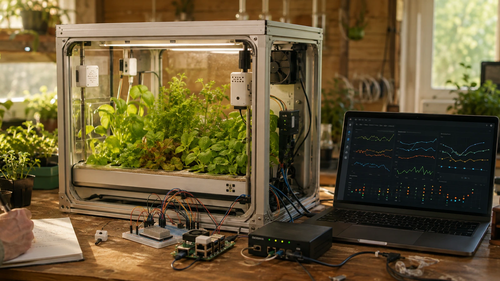
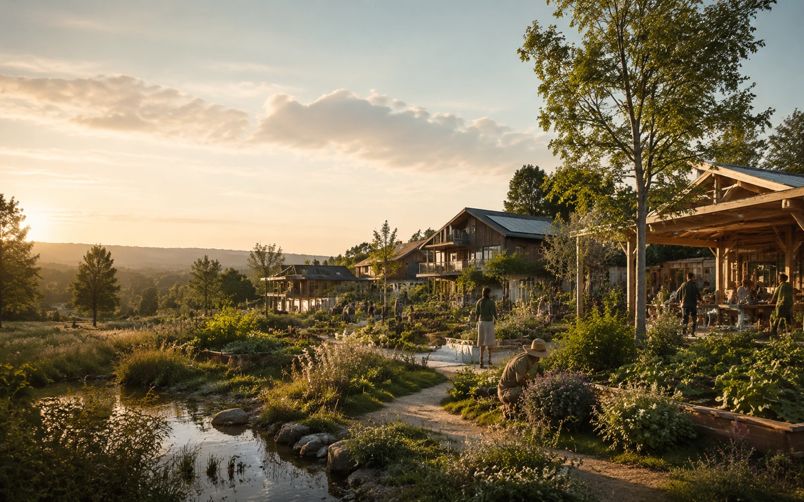
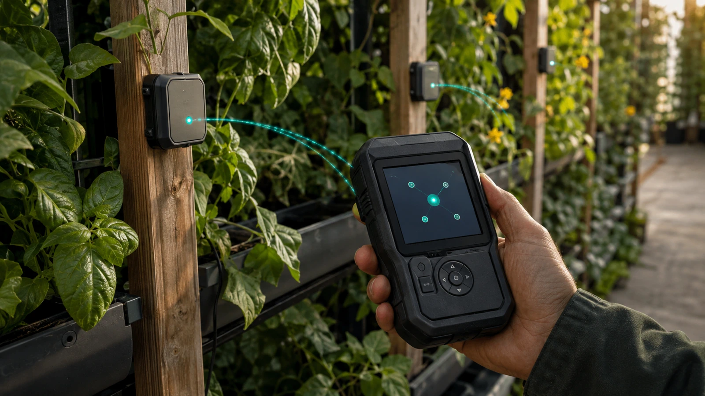
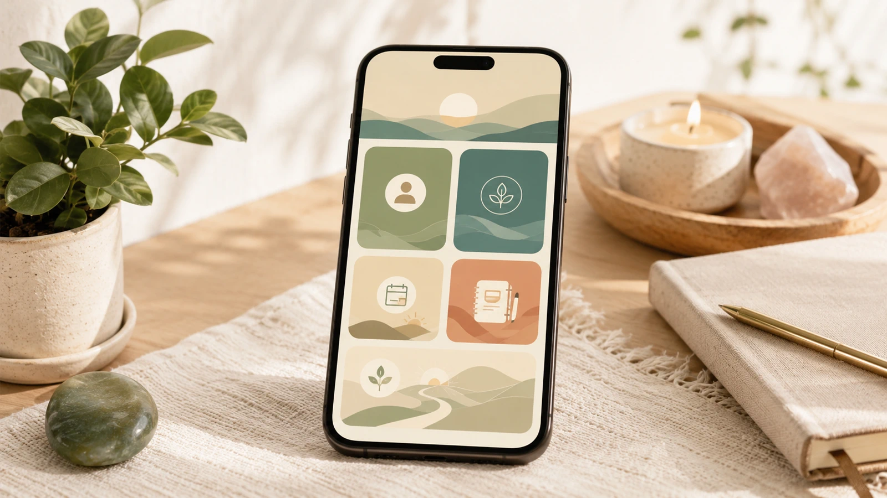
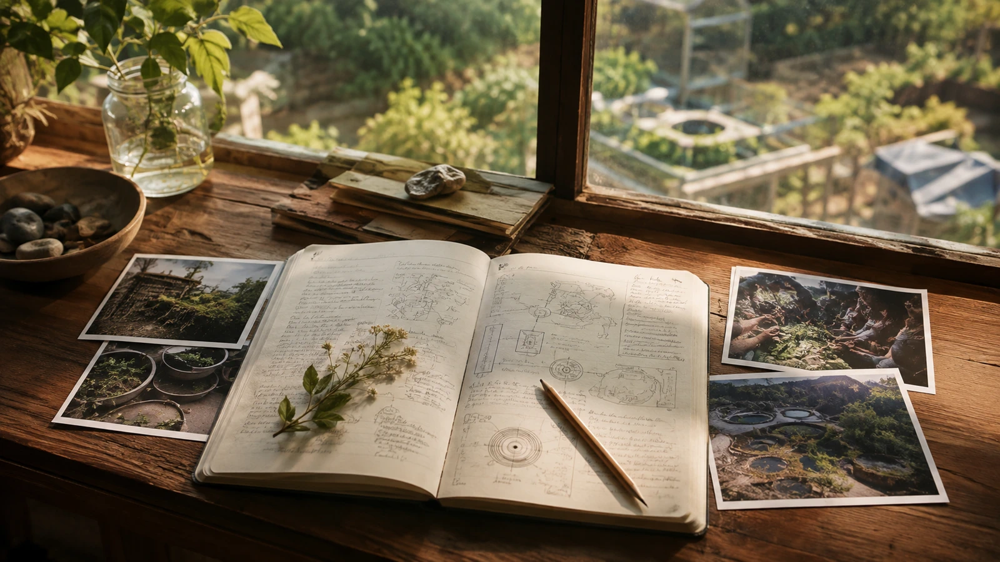
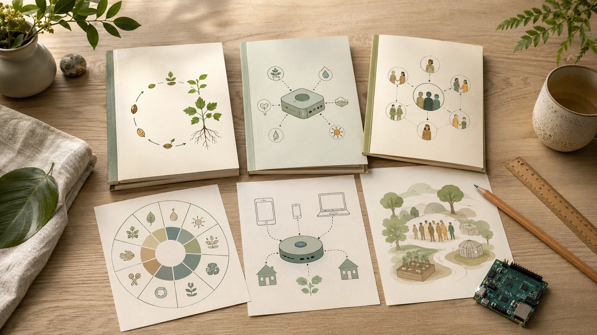
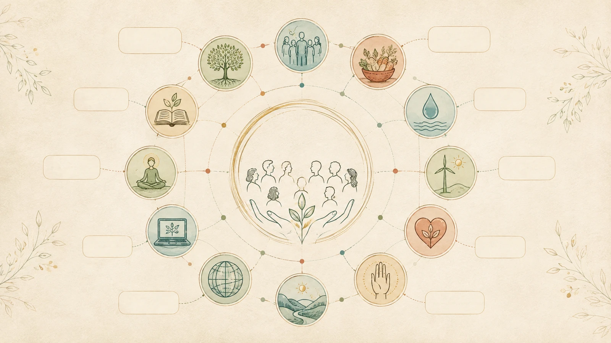
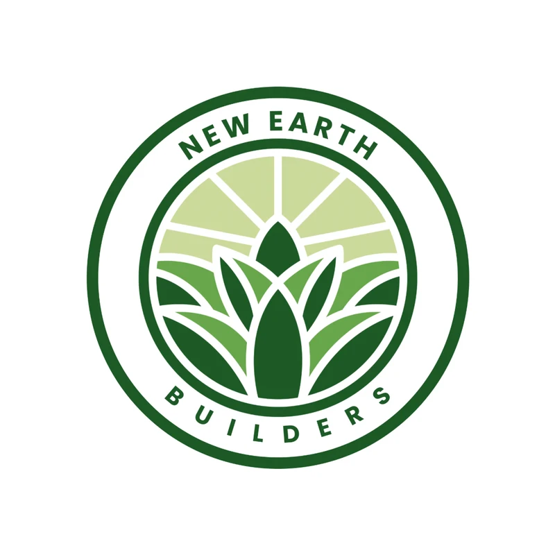

Research
MicroGrow AI Lab
Exploring how growing systems, local intelligence and practical technology could work together.
Explore project
A living framework for conscious civilization
New Earth brings vision, practical systems, and participation into one place so people can understand what is possible and choose a meaningful next step.
What is New Earth?

New Earth is a public framework for exploring the ideas, relationships, and projects that can support a more conscious civilization. It is a place for clear questions, honest progress, and practical participation.
Start with the big picture

Discover the direction and questions behind New Earth.
Explore the framework that holds the vision together.
See how the principles connect with every area of life.
Explore ideas being researched, tested and developed.
Find a meaningful way to learn, contribute or collaborate.
The 12 Pillars
Explore twelve interconnected areas of life through which the New Earth vision can be understood, questioned and developed.
How we make decisions together.
02How value, resources, and exchange relate.
03How learning stays lifelong and alive.
04How wellbeing is understood and supported.
05How nourishment connects people and land.
06How places can support belonging.
07How tools can serve life and agency.
08How harm, repair, and peace are held.
09How knowledge and stories shape culture.
10How human life belongs within living systems.
11How inner and shared life can mature.
12How generations support one another.
Ecosystem
New Earth connects a shared vision with practical frameworks, areas of life, developing projects and ways for people to participate.
Featured projects
These projects are presented at their current stage—from early research and concepts to active development.

Exploring how growing systems, local intelligence and practical technology could work together.
Explore project
A handheld concept for discovering, identifying and inspecting connected MicroGrow nodes.
Explore project
A developing app concept connecting people with the New Earth Conscious Living ecosystem.
Explore projectProgress and Transparency
New Earth is an evolving body of work. As updates become ready to share, they will be dated, placed in context and connected to the relevant part of the ecosystem.
Vision, structure and design decisions are being brought together for the next stage of the work.
As the work develops, future updates will share useful context and the next step.
Journal and learning
Use the Journal and Resources routes to find future writing, guides, and learning material when they are approved and published.

The Journal will document questions, learning, progress, and evolving New Earth work; no specific unpublished article is claimed.
Open Journal
This area will provide practical, beginner-friendly guides, references, and learning material; the illustrated guides are not yet claimed as published.
Explore resources
Help visitors understand New Earth terminology, relationships, and frequently asked questions without presenting the illustration as an operational system.
Open FAQ & GlossaryGet Involved
Start with understanding, then choose a clear route into the work.

Explore the vision, Journal, resources and developing work.
Offer knowledge, experience, time or practical support where appropriate.
Explore aligned partnerships, shared learning and carefully defined work.
Follow the journey and discover future ways to help projects develop.

An intentional community connecting innovators, healers, inventors and creators who want to collaborate, exchange knowledge and help bring New Earth-aligned projects into being.
Visit New Earth BuildersBeyond the website
Approved external channels can provide additional ways to follow public updates, watch stories and explore open project spaces.